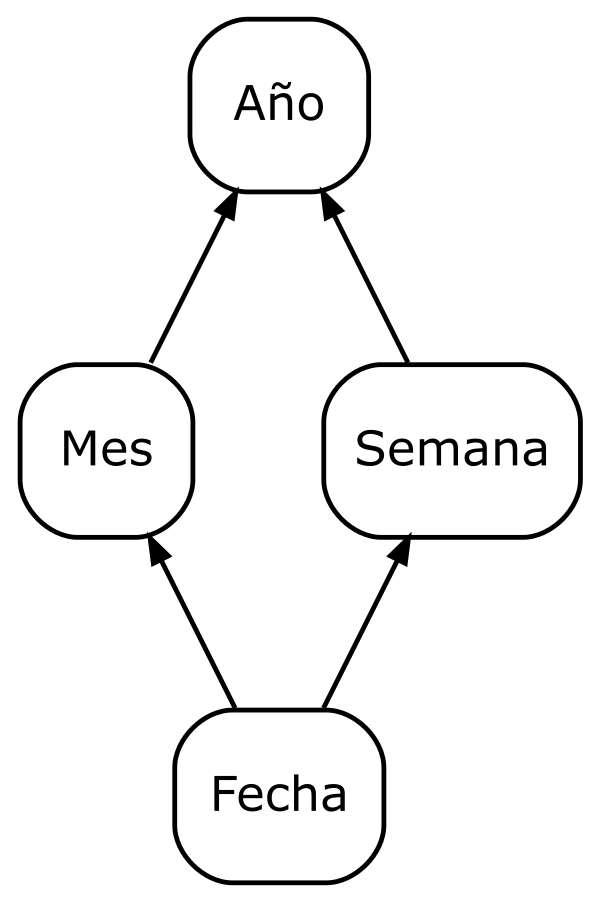

3 Power BI: Esquema Multidimensional
En esta actividad, definiremos elementos del esquema multidimensional en Power BI, centrándonos en la creación de jerarquías en las dimensiones y medidas calculadas.
El objetivo no es replicar el informe generado en actividades anteriores, sino trabajar de forma independiente. Por ello, comenzaremos desde cero descargando nuevamente el archivo con la base de datos.
3.1 Obtención de los datos
La base de datos necesaria está disponible en:
Descargaremos el archivo:
Power BI OLAP:
ventas_olap.pbix(base de datos OLAP en formato de Power BI).Renombra el archivo con tu nombre de usuario de correo electrónico.
Trabajaremos sobre esta base de datos.
3.2 Medidas calculadas
Definimos las siguientes medidas calculadas:
\(Importe = Cantidad * PVP\)
\(PVP_{medio} = \frac{\sum Importe}{\sum Cantidad}\)
3.3 Jerarquías
Las siguientes figuras ilustran las jerarquías que vamos a definir para cada dimensión del modelo:
En la figura 3.1 se muestran las jerarquías correspondientes a la dimensión Cuándo, que nos permitirá organizar la información temporal de manera estructurada.

Figura 3.1: Dimensión Cuándo.
En la figura 3.2 se muestra la jerarquía de la dimensión Dónde, que facilitará la consulta de datos organizados espacialmente.

Figura 3.2: Dimensión Dónde.
En la figura 3.3 se presentan las jerarquías de la dimensión Qué, que permitirá clasificar los datos por categorías o tipos específicos.

Figura 3.3: Dimensión Qué.
Por último, en la figura 3.4 se muestra la jerarquía de la dimensión Hora, que será clave para el análisis a nivel de horas del día.

Figura 3.4: Dimensión Hora.
Ejercicios
Ejercicio: Elementos del esquema multidimensional en Power BI
Todos los apartados siguientes valen igual.
- Implementación de los informes:
- En una página, define los 4 informes incluidos en el apartado Operaciones (apartado 2.2 ), cada uno de ellos en forma de tabla dinámica.
- Define el filtro de la operación Slice&Dice para toda la página.
- Cuadro de mando libre:
- Obtén un informe libre sobre resultados de las ventas a partir de la base de datos OLAP.
- Se valorará la originalidad del informe.
- Partiendo siempre de ese informe libre inicial, obtén 3 informes, al menos uno de ellos en formato gráfico, que se correspondan con las operaciones:
- Roll-Up
- Drill-Down
- Slice&Dice
- Incluye los cuatro informes en una página y define el filtro de la operación Slice&Dice para toda la página.
- Obtén un informe libre sobre resultados de las ventas a partir de la base de datos OLAP.
Documentación a entregar:
Genera un documento en formato PDF con la estructura siguiente y el contenido que se indica a continuación:
- Implementación de los informes
- Informe Inicial
- Roll-Up
- Drill-Down
- Slice&Dice
- Cuadro de mando
- Cuadro de mando libre
- Informe Inicial
- Roll-Up
- Drill-Down
- Slice&Dice
- Cuadro de mando
- Implementación de los informes
Antes de realizar las capturas de pantalla:
- Guarda o renombra el archivo Power BI con tu nombre de usuario de correo electrónico.
- Renombra las páginas que contengan los cuadros de mando con tu nombre de usuario como prefijo.
Para la implementación de cada informe (también para los del cuadro de mando libre) incluye:
- El título y los niveles de detalle de cada informe.
- Captura de pantalla completa de la aplicación con la definición y visualización de solo ese informe.
Para los cuadros de mando incluye:
- Captura de pantalla completa de la aplicación mostrando el filtro.
- Dos capturas de pantalla completa de la aplicación mostrando cómo funciona el campo de filtro (antes y después de aplicarlo).